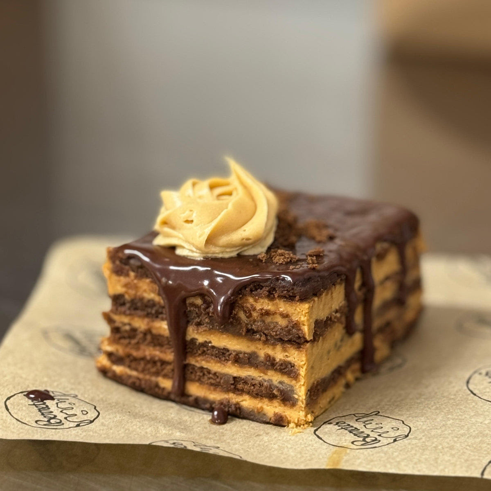

CHOCOTORTA
INGREDIENTES
- GALLETAS DE CHOCOLATE
- UN POCO DE CHOCOLATADA CALIENTE
- DULCE DE LECHE
- QUESO CREMA
PREPARACION
- MEZCLAR EN UN BOWL EL DULCE DE LECHE Y EL QUESO CREMA
- PONER LAS CHOCOLINAS REMOJADAS EN CHOCOLATADA CALIENTE EN UN TAPER CUADRADO
- PONER LA MEZCLA DE QUESO CREMA Y DULCE DE LECHE ENCIMA Y SEGUIR HACIENDOLO HASTA QUE ESTE LISTO
- Y POR ULTIMO DEJAR LA PREPARACION EN LA HELADERA HASTA EL DIA SIGUIENTE

